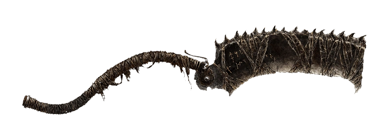
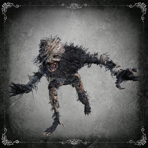
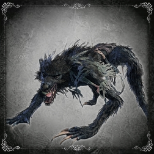

Introdução
Você que está lendo esse livro agora, sinto muito pela fatídica noite que lhe aguarda.
Arsenal utilizado pelos caçadores
De uma olhada e escolha aquilo que lhe apeteça.

Saw Cleaver
Uma arma versátil, excelente contra bestas.
Documentação das Bestas
Nessa seção reservamos as informações e pesquisas relacionadas às feras encontradas em nosso caminho.

Beast Patient
Frágil, mas perigoso em grupo.

Scourge Beast
Robusto e feroz, excelente em emboscadas.
Técnicas de Sobrevivência
- Esquive-se para os lados ou para frente, mas, nunca para trás.
- Use tochas em áreas escuras para evitar emboscadas.
- Aprenda a usar a sua arma de fogo com maestria, dê prioridade aos pontos fracos.
Discernimento
Ao explorar Yharnam é possível que encontre algumas forças abstratas e de formato inconsistente. Meus parabéns, bom caçador isso significa que você se deparou com algum ser ou objeto além da compreensão humana, dessa forma, me dei o direito de reservas alguns exemplares.
- Lanternas fluorescentes: Alguns humanos transformados possuem afinade com o arcano, assim é bem capaz que você se depare com alguns deles usando fontes de luzes peculiares com a capacidade de te ferir a distância.
- Presença Eminente: Já foi relato por alguns caçadores que no telhado de determinadas casas pode-se observar a imagem borrada e disforme de enorme criaturas encarando seus movimentos. Olhos é oque não lhes falta.
- Runas de Caryll: Ao desbravar as ruas escuras e frias de Yharnam é bem provável que você descubra a existência das tais Runas de Caryll, elas são poderosíssimas marcas capazes de aprimorar instintos humanos se utilizadas corretamente.